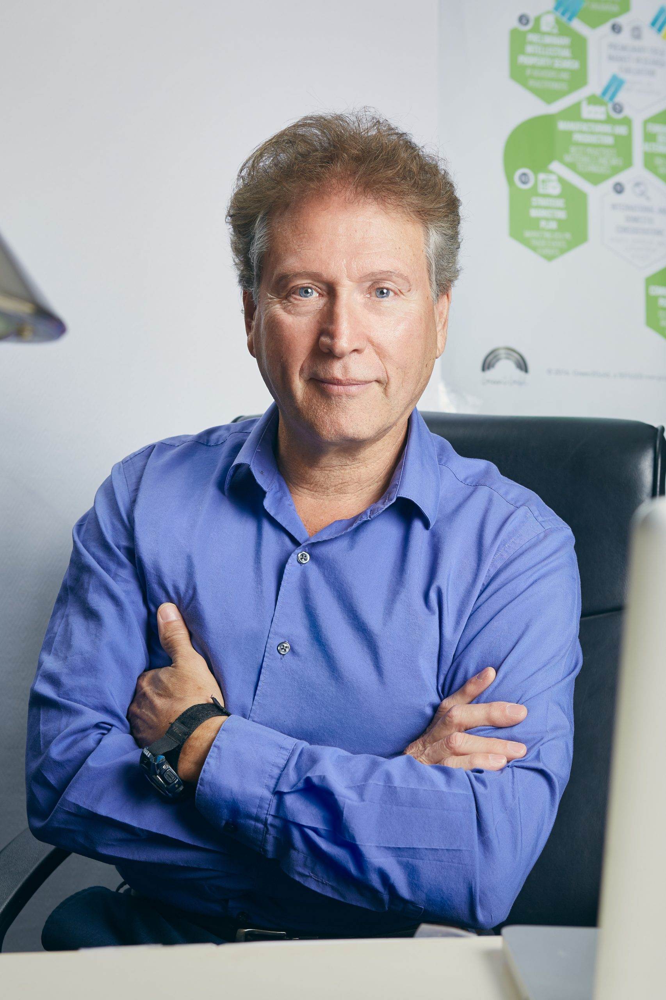
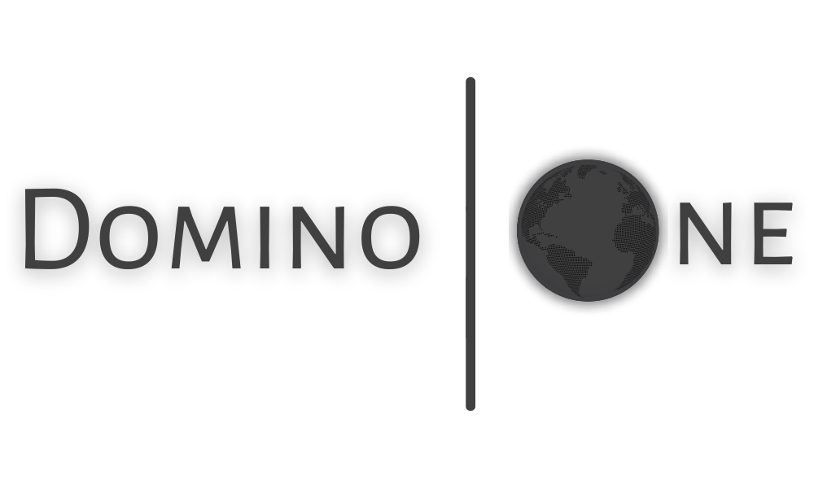

About Green2Gold
A nonprofit educational organization and impact incubator: history, mission, philosophy, leadership and the partners behind our work.
Since 1970: from the first Earth Day to the global green economy
Green2Gold is a pioneering impact incubator since 1970 and a 501(c)(3) nonprofit. Its roots are in the founding of the modern environmental movement. Founder Prof. Alan Arthur Tratner helped establish the famous Earth Day, participated in the First International United Nations Conference on the Human Environment in Stockholm, Sweden (1972), and founded the Environmental Education Group (EEG est. 1972) with many supporters, including Nobel prize winner Dennis Gabor.
Through the non-profit Inventors Workshop International (IWI est. 1971) and the Entrepreneurs Workshop, Green2Gold and IWI have helped over 100,000 members for over 50 years. Green2Gold has a rich history of conducting workshops, world class conferences, expositions, and facilitating incubators across the globe — over 5,000 workshops and seminars, from Stanford University to Moscow, Russia.
Green2Gold is inclusive in every way imaginable and has been since helping found EarthDay and the First International United Nations Conference on the Human Environment.

About Green2Gold
We cannot do business just the way we have in the past: unbridled, war like competition, conflicts, narrow focused decision making, short-range actions and one-sided goals. We as a people are obviously overrun with greed, misuse of resources, misuse and abuse of our people and our world as a whole. Our business and personal decisions have continued to fill our planet with more and more fear, poverty, wars and pollution. The disharmony of the environment our mother planet now chokes in, reflects very little true deep commitment to planet responsibility or individual responsible decision making. Though, every generation shows some compassion to future generations, they have continued to make decisions that throw future generations into more and more planet-destroying dilemmas, where by the planet itself becomes more and more toxic and less and less inhabitable.
GREEN2GOLD unites highly experienced business advisers, cutting edge engineers, award winning designers, innovative developers, state of the art manufacturers, international practicing attorneys, world responsible trusted financial experts, creative professional educators, leading scientists, wide spectrum marketing and licensing established relationships, world helping inventors, innovators, social ventures, and non profit founders.
Green2Gold takes what you have, adds our creative energies and collective world connecting power, and converts that to palatable real life exciting consumer success.
How Green2Gold works
A non-profit educational system
Green2Gold is a non-profit educational system that provides pathways for inventors, entrepreneurs or any kind of creative person. Green2Gold specifically guides people and organizations to the most constructive and productive pathways that fit their individual goals and needs — and teaches why those pathways are chosen.
FAQ About Green2Gold →Impact business incubators & accelerators
Green2Gold, a non-profit 501(c)(3) global incubator creator, nurtures business development at locations around the world. Our Green Entrepreneurial Innovation Hub is dedicated to advancing Mixed Technology and Mixed Use entities — Aerospace, Agriculture, Biotechnology, Energy, Green Chemistry, Healthtech, Renewable Energy of All Types, The Green Economy, Watertech, and more. We are unique in that we incubate impactful nonprofits (over 300 to date) that are socially and environmentally responsible.
Bring G2G to your community →Environmental sustainability & innovation
Green2Gold develops and rapidly commercializes conventional ideas, new energy and environmental technologies, sustainable enterprises, products, and services for the consumer, government, and business marketplaces — including climate change resilience, adaptation and mitigation, carbon credits and other economic benefits.
Transition to Sustainability →World Responsible Industries & the Co-Venture
World Responsible Industries (WRI) is the Gold that Green2Gold takes you to. When your product or concept is ready for the marketplace, a WRI Co-Venture offers a peaceful, harmonious new paradigm that protects your creation and gives it more freedom to progress and evolve.
Co-Venture FAQ →Executive Team

Prof. Alan Arthur Tratner – International Director
Prof. Alan Arthur Tratner, has served as the President of the Inventors Workshop International and the Entrepreneur's Workshop, Director of the Small Business Entrepreneurship Center in California, is a SCORE (US SBA) consultant, and was publisher of the Lightbulb Journal and INVENT! magazines. He is an inventor and serial entrepreneur, with 13 inventions/patents. He has been dubbed the "Minister of Ideas" by the media and has been featured in the Wall Street Journal, Inc., Entrepreneur, Business Week, TIME, USA Today, America Online Forum, NPR, and has appeared on OPRAH, CNN, Good Morning America, and CNBC. Alan has mentored and assisted thousands of green technology, sustainable ecology and energy companies and inventors.
He was a former Professor of Environment and Energy, participated in the First International United Nations Conference on the Human Environment, in Stockholm Sweden, was a staff member of Environmental Quality Magazine and helped establish the famous Earth Day. He founded the Environmental Education Group Foundation in 1972 with many supporters, including Nobel prize winner Dennis Gabor. Alan traveled the USA conducting the Ultimate Crisis and Solutions for Survival seminars, led an environmental and alternative energy delegation to the former Soviet Union for the Citizen's Ambassador Program. He was editor of Energies Journal for the Solar Energy Society of America, published the Geothermal Energy Magazine and Geothermal World Directory.
In the 1990's he became Director of the Green Business Conference of the ECO EXPO, created the Eco Inventors and Eco Entrepreneurs Workshops, and the New Environmental Technologies Exhibits. In 2012, Alan was inducted into the International Green Industries Hall of Fame and honored with Lifetime Achievement. Alan is the Chairman for the California Space Enterprise Center, a major development for Private Space Enterprise.
More about Alan
Alan helped establish the first EarthDay, served on staff of Environmental Quality Magazine, and participated/contributed to the First International United Nations Conference on the Human Environment, in Stockholm, Sweden in 1972. He founded the 501 C3 Non Profit, Environmental Education Group (EEG est. 1972). EEG has its star projects in the Green2Gold Incubators and Workshops for sustainable economic development, major world helping, responsible solutions, the Small Business Entrepreneurship Center, and the TECHBREW Multi-Dimensional MEGAMIXERS. Mr. Tratner was president of the non profit Inventors Workshop International (IWI est.1971) and Entrepreneurs Workshop. He is a prolific inventor in renewable energy and transportation, and a serial entrepreneur, and has helped over 100,000 members of Green2Gold and IWI for over 50 years. Alan has conducted over 5,000 workshops and seminars around the globe, from Stanford University to Moscow, Russia.
He is a former Professor of Environment and Energy. Alan created and managed the U.S. SBA's Santa Barbara County Small Business Development Center, and is a SCORE counselor. Alan has been dubbed the "Minister of Ideas" by the media, and has appeared on, and been featured in most of the leading media of our times, from CNN, CNBC, Oprah, Good Morning America, The Today Show, Tomorrow Show, NPR, Wall Street Journal, Time, Business Week, Newsweek, USA Today, Sustainable Industries, Fortune Small Business, INC, etc., to numerous radio programs, and newspapers. He was co host of the nationally syndicated New Venture Money Show and Inventors Workshop on the Air featured on the Business Radio Network in 90 USA cities.
Mr. Tratner was the Editor in Chief of Energies Journal of the Solar Energy Society of America, publisher of the Geothermal Energy Magazine and Geothermal World Directory, was Executive Director of The Geothermal Energy Association, and Green Retailers Association, and was director of the Green Business Conferences, created the first national Eco-Inventors and Eco-Entrepreneurs Workshops, and the New Environmental Technologies Exhibits at Eco Expo's across America during the 1990's. Green2Gold produced and cosponsored the Clean Business Investment Summit and is cosponsor and producer of Entrepalooza! and performs the transitional consulting for sustainability, businesses, and institution entering the Green Economy. Green2Gold has also created a California Climate Resources Guide for the state that covers climate mitigation, adaptation, and resilience. Professor Tratner presented in EarthDay's 50th anniversary, on April 22, 2020, a Planetary Summit. Alan has received numerous awards and recognitions, ranging from the White House to governors, mayors, and in 2012, Alan was inducted into the International Green Industries Hall of Fame and honored for his Lifetime Achievement.
Lielle Arad – Chairman of Environmental Education Group
Lielle Arad chairs the Environmental Education Group (EEG), Green2Gold's founding environmental-education partner. Author of "The Sustainable Planet & the Total Vantage Point."
Visit the Environmental Education GroupCommittee of Responsibility (COR)
The Committee of Responsibility (COR) is many years in the making, and a new paradigm in bringing responsible, solid, unbiased, neutral, and deeply thought out examined decisions for nonprofit public benefit orgs as well as profit making businesses.
Green2Gold is also presenting a visionary Committee of Responsibility; with working innovations that are bringing harmony and are replacing the chaotic way the world does business.
Green2Gold Responsibility Board of Directors
Through the years, Green2Gold has become a world helping organization with our nucleus being responsibility. Under these conditions we are being approached with many projects all over the world. To handle these many projects effectively and efficiently and with our promised overview of responsibility we select experts to be on boards that deal and focus specifically on certain projects. Our Green2Gold Responsibility board of directors, has as one of its functions the job of making sure all boards that are chosen for specific projects are making their recommendations and their decision choices for their specific projects, with the utmost integrity and responsibility to our communities and to our world. In this way all decisions are ran through this G2G responsibility process. With these safeguards in place, our supporters and our sponsors remain confident and will continue to support and promote our world helping services.
Founding Honorary Directors & Consultants
Alumni of Board of Directors
Organizational partnerships
Green2Gold is pleased to have a strategic partnership with a top tier impact accelerator that include an SEC broker dealer for all types of funding.
The operational horsepower behind Domino One helped start the first Earth Day and has 50+ linear years of experience successfully incubating and accelerating hundreds of impact companies & projects while also helping governments, investors and big brands position themselves for the wave we're experiencing now.
Domino One
GrantStation
Get your GrantStation Membership via Green2Gold — tools to find, build, write and win grant funding.
Grantstation WebsiteU.S. SBA, SCORE & the Los Angeles Public Library
Long-standing workshop partnerships serving inventors and small businesses since 1993.
Read their testimonials →International Green Industries Hall of Fame
In 2012, Alan was inducted into the International Green Industries Hall of Fame and honored with Lifetime Achievement. Alan has received numerous awards and recognitions, ranging from the White House to governors and mayors, and Green2Gold has been featured on CNN, Discovery Channel, Good Morning America, iHeart, NPR, Popular Mechanics, TIME and TODAY.
Our impact & community